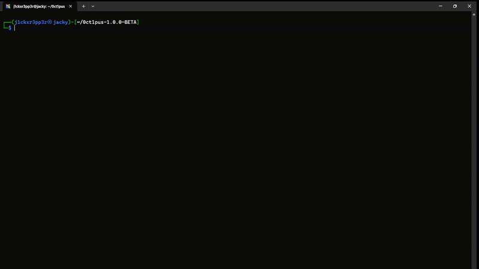
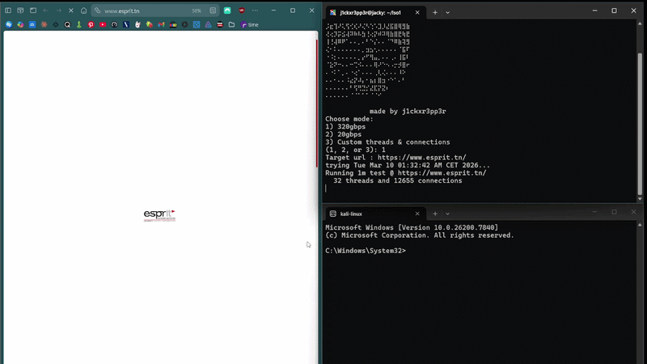
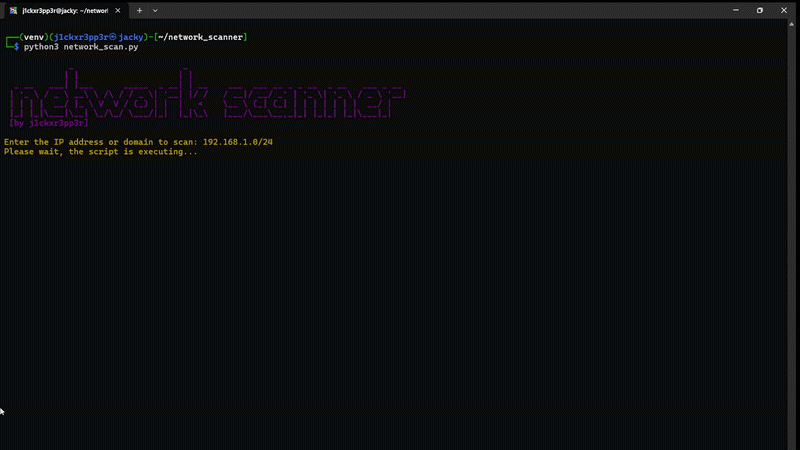

Mes projets reflètent une exploration approfondie du scripting, du réseau et de la sécurité informatique. Ils couvrent aussi bien la refactorisation d’applications web que la création d’outils d’analyse, d’automatisation et de tests de performance. Chaque projet met en avant une approche pratique, orientée optimisation et compréhension des mécanismes internes des systèmes, tout en démontrant une progression constante dans la maîtrise des environnements Linux, des protocoles réseau et du développement d’outils techniques.
Ce projet est un script Bash avancé conçu pour automatiser des tentatives d’authentification en utilisant des listes de mots de passe, tout en routant l’ensemble du trafic à travers le réseau TOR. Il intègre un système multi‑thread, une rotation automatique d’adresse IP, la génération d’identifiants d’appareil aléatoires et une émulation du comportement de l’application Instagram. Le script permet également de sauvegarder et reprendre des sessions, offrant un fonctionnement continu et structuré. L’ensemble démontre une maîtrise poussée du scripting Bash, des outils Linux, du routage anonymisé et des mécanismes d’API.

Ce projet analyse un script Bash utilisant l’outil légitime wrk pour générer un volume extrêmement élevé de requêtes HTTP. Bien que présenté comme un outil de test de performance, son fonctionnement — basé sur une boucle infinie, des charges massives et l’absence de mécanismes de limitation — met en évidence un comportement typique d’un générateur de trafic intensif. L’étude détaille son architecture, ses modes de configuration, son impact sur les ressources système et les implications techniques liées à la saturation réseau et serveur.

Ce projet est un scanner réseau avancé conçu pour détecter les appareils connectés à un réseau local, analyser leurs services et identités. Il intègre des fonctionnalités de balayage de ports, d'identification de systèmes d'exploitation et de détection d'anomalies de sécurité. L'outil permet également de générer des rapports détaillés sur l'état du réseau et les vulnérabilités potentielles.
